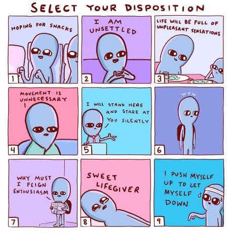

"Emotion arises. There’s nothing to be done about them. They dont need to be honored or pushed away or anything else. They just are what is."
--Tony Parsons
"Identification with sensation makes the self. If there is no identification; is there a self?"
--J. Krishnamurti
Feeeelings, nothing more than feeeelings.
Gosh feelings seem important don’t they?
Majorly important. Demanding of attention important.
I mean, we judge every experience by how we feel, and whether we like that feeling.
Every single experience. Evaluated based on feeling.
That's important.
Naturally then, there are many approaches for feelings management.
Many methods. Many experts. Many beliefs.
Allow, Welcome, Sit with, Breathe into, Listen to, Honor. Find out what lies beneath. Interpret meaning. Meditate (or medicate) so that the resulting calm leaks into other life situations later.
Though maybe we don’t need all that instruction or control management. Maybe we can just check our own experience.
For instance when we’re hurting, there’s no question we’re alive, is there?
Lots of people feel alive only when they’re feeling intensely.
Otherwise they feel bored, numb, empty, dissatisfied.
For many many people, if there’s too much peace, mind starts looking for the next problem to fret about.
Almost as if we can’t bear to be separated from intensity for too long.
Almost as if, I feel, therefore I exist.
Hmmm.
Could it be that feelings are a trick designed to draw our
attention away from something?
A situation arises, we feel "bad," we can’t focus on anything other than trying to feel "better."
And what are we not noticing while our attention is all about some feeling?
Well for one thing… we don’t notice what exactly is doing the allowing, sitting-with, validating, and interpreting.
What feels feelings?
What pays attention to them? What interprets them?
Especially, what benefits from all that focus on a few sensations?
“I am sad / afraid / ashamed.”
“I AM (insert intensity word here).”
Feelings are a strategy to solidify the sense of self.
They seem to prove us.
In fact, they’re our only real evidence.
How do I know I exist? Well I feel it. I sense it. There’s a sense of me.
That’s our proof. The decoy works.
Intensity creates the story of self.
Never mind that there’s no one provable who’s experiencing, or that nothing real actually benefits from all that attention.
And though intensity might indeed sometimes fade away with all the focus and welcoming we give it…
That's only after it's established the ‘you’ that is feeling it.
When we focus on how things feel, we solidify the self, we solidify the sense of being a body, and we miss entirely that…
It doesn’t matter what we feel.
Feelings come, feelings go, they carry no meaning on their little nerve endings, they contain no definition of a person.
All of that is added to, loaded onto, any sensation. By thought.
And we know how trustworthy that is.
Now I realize that saying this is scandalous, possibly even infuriating.
After all, we're all completely used to, indoctrinated even, to the idea that feelings are vitally, center-stagely, important.
Like a religion, really.
So maybe it's very upsetting for your friendly Mind-Tickler to point out that emotions are just sensations. No less. Certainly no more.
So let's be clear, I’m not belittling feeling. I'm not saying don't feel. I'm not saying bypass.
None of that's really a choice anyway. Feeling does what it wants.
If it wants our devotion, it gets our devotion.
I’m just calling attention to something different for a change.
Something other than preferences about body sensations.
Something not defined, or created, by those sensations.
Something that’s nothing.
Because nothing isn’t capable of hurting.
And isn’t that what we’re hoping for by dealing with feelings, or pursuing happiness, in the first place?
So enjoy nothing.
It can’t hurt.
.
Click here to watch Judy on Buddha at the Gas Pump
"This we have now
is not imagination.
This is not
grief or joy.
Not a judging state,
or an elation,
or sadness.
Those come
and go.
This is the presence
that doesn’t.
And …
This we have now."
--Rumi
